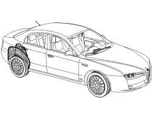
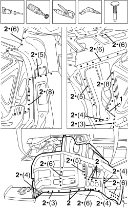
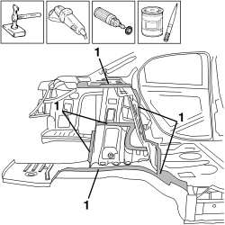
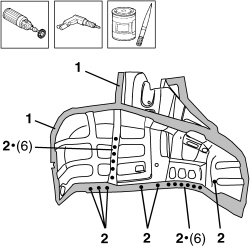
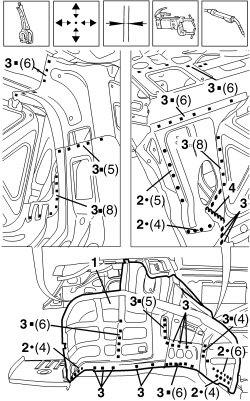
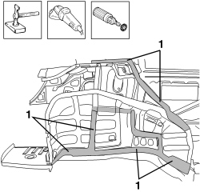
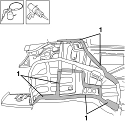

7210B40 R.R. REAR INNER WHEEL ARCH
- Path
- Procedures > 72 PANELS AND FRAMES > 7210 REMOVING-REFITTING > 7210B STRUCTURAL ELEMENTS (CENTRE AND REAR SECTION) > 7210B40 R.R. REAR INNER WHEEL ARCH
- Kind
- repair procedure (removal / refitting; the operation number is the code)
- Applies to
- all engines; all production periods
- Interactive page
- https://sloeber94.github.io/elrnDB/#/939011418
Applies to: all engines; all production periods
 Removing
Removing
 Refitting
RefittingOp. 7210E36 R.R. FRONT SIDE DOOR
Op. 7210E38 R.R. REAR SIDE DOOR
Op. 7210B50 R.R. REAR WING LOWER FRAME
Op. 7210B75 R.R. REAR LIGHT CLUSTER HOUSING
Op. 7210B18 R.R. ROOF PANEL SUPPORTING CROSSMEMBER
Op. 7210E34 R.R. ROOF PANEL/SIDE PANEL CONNECTION PROFILE-MOULDING
Op. 7210B65 R.R. REAR PILLAR (WING INTERIOR)
Op. 7210E72 R.R. FUEL FILLER BUSH WITH WING REMOVED
Op. 7210B45 R.R. REAR WING FRAME
- Check that the components connected are not distorted by checking the bodyshell alignment measurements using suitable equipment (gauges, templates or jigs).
- Straighten the body as necessary.

Applies to: all engines; all production periods
1. Use a hack sawing machine following the cutting line shown in the diagram.
- Use a rotary brush to remove the paint to gain access to the spot welds.
2. Use the chamfering machine to remove the spot welds shown in the diagram.
- Use the drill and chamfer the spot welds not accessible with the chamfering machine.
- Use the hammer and chisel and remove the spot welds chamfered previously.
- Remove the part from the vehicle.

Applies to: all engines; all production periods
- Straighten the edges of the vehicle using a mallet and profiled block.
- Remove the spot weld residues using a disc grinder.
- Use a rotary brush to clean the areas treated previously.
1. Apply electro-galvanizing paint.

Applies to: all engines; all production periods
1. Remove the anti-corrosion treatment from the entire perimeter of the inside and outside of the replacement part using a rotary brush.
2. Drill the part at the points shown using a drill.
- Apply electro-weldable paint to the edges involved.

Applies to: all engines; all production periods
Refitting
Removing1. Position the replacement part correctly on the vehicle and secure it using self-locking clamps.
- Check the alignment and the surrounding gaps.
2. Use a spot welder in the areas shown in the diagram.
3. Use a MIG welder and weld the openings made previously in the replacement part.
4. Use a MIG welder to seam weld in the join areas.

Applies to: all engines; all production periods
- Correct any distortions to the panel using a hammer and dolly block.
1. Use a disc grinder to level the welds.
- Use a rotary brush to clean the areas welded previously.

Applies to: all engines; all production periods
1. Apply anti-oxidant protection to the areas involved in the welding.
- Seal the join lines between the replacement part and the vehicle.

Applies to: all engines; all production periods
Op. 7210B45 R.R. REAR WING FRAME
Op. 7210E72 R.R. FUEL FILLER BUSH WITH WING REMOVED
Op. 7210B65 R.R. REAR PILLAR (WING INTERIOR)
Op. 7210E34 R.R. ROOF PANEL/SIDE PANEL CONNECTION PROFILE-MOULDING
Op. 7210B18 R.R. ROOF PANEL SUPPORTING CROSSMEMBER
Op. 7210B75 R.R. REAR LIGHT CLUSTER HOUSING
Op. 7210B50 R.R. REAR WING LOWER FRAME
Topics linked from this page (11)
- 7210B18 R.R. ROOF PANEL SUPPORTING CROSSMEMBER
- 7210B45 R.R. REAR WING FRAME
- 7210B50 R.R. REAR WING LOWER FRAME
- 7210B65 R.R. REAR PILLAR (WING INTERIOR)
- 7210B75 R.R. REAR LIGHT CLUSTER HOUSING
- 7210E28 R.R. ROOF PANEL
- 7210E34 R.R. ROOF PANEL/SIDE PANEL CONNECTION PROFILE-MOULDING
- 7210E36 R.R. FRONT SIDE DOOR
- 7210E38 R.R. REAR SIDE DOOR
- 7210E52 R.R. REAR WING
- 7210E72 R.R. FUEL FILLER BUSH WITH WING REMOVED